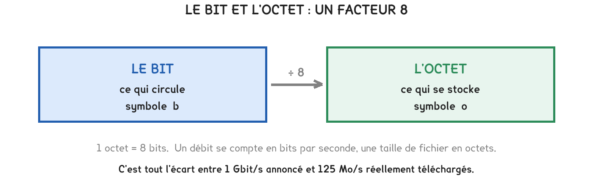
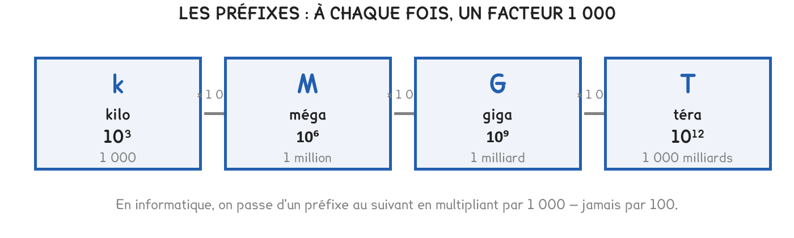

2de Bac Pro CIEL
Un client trouve sa fibre lente. Il a téléchargé 8 Go en 3 minutes sur une ligne annoncée à 1 Gbit/s. Pour lui répondre, il faut un facteur 8 et une division — et savoir lequel des deux nombres est un débit.
4 exercices · 41 items d'entraînement · 1 repli · 3 figures
Savoirs travaillés
Un client appelle. Son abonnement fibre est annoncé à 1 Gbit/s. Il vient de télécharger un fichier de 8 Go en 3 minutes, et il estime s’être fait avoir.
La question n’est pas de savoir s’il a raison, mais de le prouver avec un chiffre. Tout tient en deux gestes : ramener les deux grandeurs à la même unité, puis diviser.

1 octet = 8 bits
Un débit s’annonce en bits, une taille en octets, et le facteur 8 se cache entre les deux. Une ligne à 1 Gbit/s ne transfère pas 1 Go par seconde, mais 125 Mo. C’est l’erreur de toute la séquence, et elle passe inaperçue tant qu’on ne regarde pas l’unité.

k = 10³ · M = 10⁶ · G = 10⁹ · T = 10¹²
D’un préfixe au suivant, on multiplie par 1 000.
L’écriture scientifique s’écrit a × 10ⁿ, avec 1 ≤ a < 10. Elle sert à comparer d’un coup d’œil : 4,7 × 10⁹ et 470 × 10⁷ sont le même nombre, mais un seul des deux le dit.
Une durée est un quotient, et un quotient n’a de sens que si les deux nombres parlent la même langue. Toute la difficulté tient là : les tailles s’écrivent en octets, les débits en bits, et rien à l’écran ne le rappelle.
On ne divise jamais une taille en octets par un débit en bits. Le résultat sort huit fois trop petit — le téléchargement paraît huit fois plus rapide qu’il ne l’est. Il a l’air plausible, et rien ne signale l’erreur.
Ses 8 Go font 64 Gbit. À 1 Gbit/s, le transfert aurait dû prendre 64 secondes, soit un peu plus d’une minute. Il en a mis trois.
Le client a raison de râler, mais pas du bon facteur. Il a reçu environ 355 Mbit/s là où on lui en promet 1 000 : l’écart est de trois, pas de huit. Et une part s’explique — le serveur d’en face, le Wi-Fi, le disque qui écrit.
Exercice · AU
Le client a transféré 8 Go en 3 minutes. Quel débit cela fait-il, en mégaoctets par seconde ?
Exercice · AU
Une mise à jour de 1,5 Go est poussée sur une ligne à 50 Mbit/s. Combien de minutes faut-il ?
Exercice · AU
Répondez au client : sa ligne tient-elle ce qui est annoncé ?
Les mêmes séries que sur la feuille. On remplit chaque case, puis on vérifie la série entière d’un coup.
Série · AU
Série · AU
Série · AU
Série · AU
Série · AU
Série · AU
Pour aller plus loin
Ce n’est pas un hasard de vocabulaire, et personne ne l’a choisi pour vous embrouiller — mais cela arrange le vendeur.
Un débit en bits par seconde donne un nombre huit fois plus grand que le même débit en octets. « 1 Gbit/s » se vend mieux que « 125 Mo/s », qui est pourtant la même ligne.
La règle pratique : dès qu’une publicité annonce un débit, divisez par 8 pour savoir ce que vous téléchargerez vraiment. Vous obtenez alors un nombre comparable à la taille de vos fichiers.
Le même genre d’écart existe sur les disques. Un disque vendu « 500 Go » s’affiche à 465 Go dans l’ordinateur. Le fabricant compte en milliers, le système en paquets de 1 024 : les deux disent vrai, et l’écart est de 7 %. Ce n’est pas un disque abîmé, et ce n’est pas une arnaque.
Un seul problème, qui reprend toute la séquence. On le fait d’un bout à l’autre, comme un vrai : il n’y a pas d’indication de méthode en cours de route. À la fin, on produit son fichier de réponses.
Le serveur du lycée sauvegarde ses données chaque soir vers un NAS. Le fichier de sauvegarde pèse 12 Go. Le lien entre les deux machines est annoncé à 200 Mbit/s. Le technicien dispose d’une fenêtre de dix minutes avant l’extinction des postes.
La question : « La sauvegarde tient-elle dans la fenêtre de dix minutes ? »
Lire la situation
a) Relever la taille du fichier et le débit du lien, avec leurs unités.
b) Dire laquelle des deux est en octets, laquelle est en bits.
Choisir la méthode
c) Proposer la démarche qui mène de la taille et du débit à une durée, et dire dans quel ordre.
d) Dire pourquoi on ne peut pas diviser 12 par 200 directement.
Calculer
e) Convertir la taille du fichier en gigabits, puis en mégabits.
f) Calculer la durée du transfert en secondes, puis en minutes.
g) Donner le débit du lien en mégaoctets par seconde.
Conclure
h) Dire si la fenêtre est tenue, et avec quelle marge.
i) Citer une raison pour laquelle la durée réelle pourrait être plus longue que la durée calculée.
Série · AU
Exercice · AU
Expliquer en deux phrases ce qui cloche dans ce calcul direct.
Cette page rappelle la séquence. Elle ne remplace pas les documents distribués et ne donne aucun corrigé. Tous les calculs se font dans votre tablette ; rien n'est enregistré.